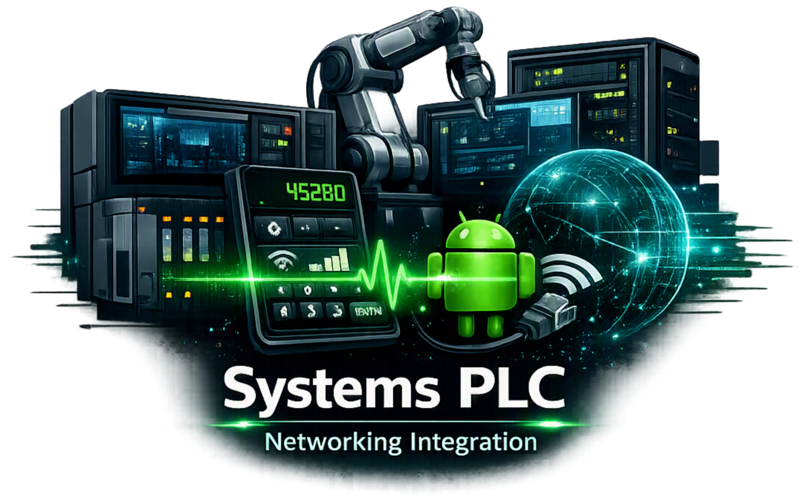
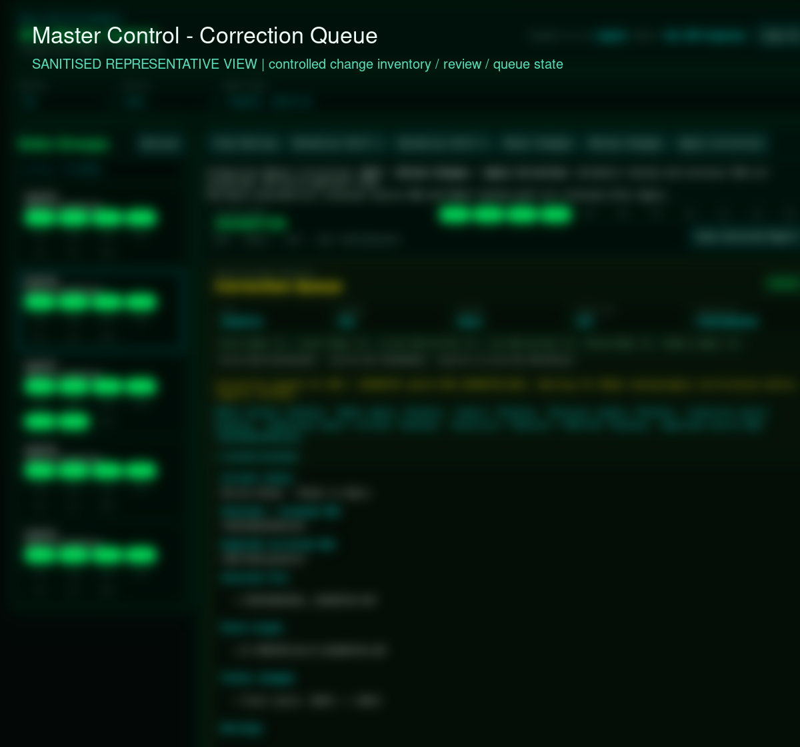
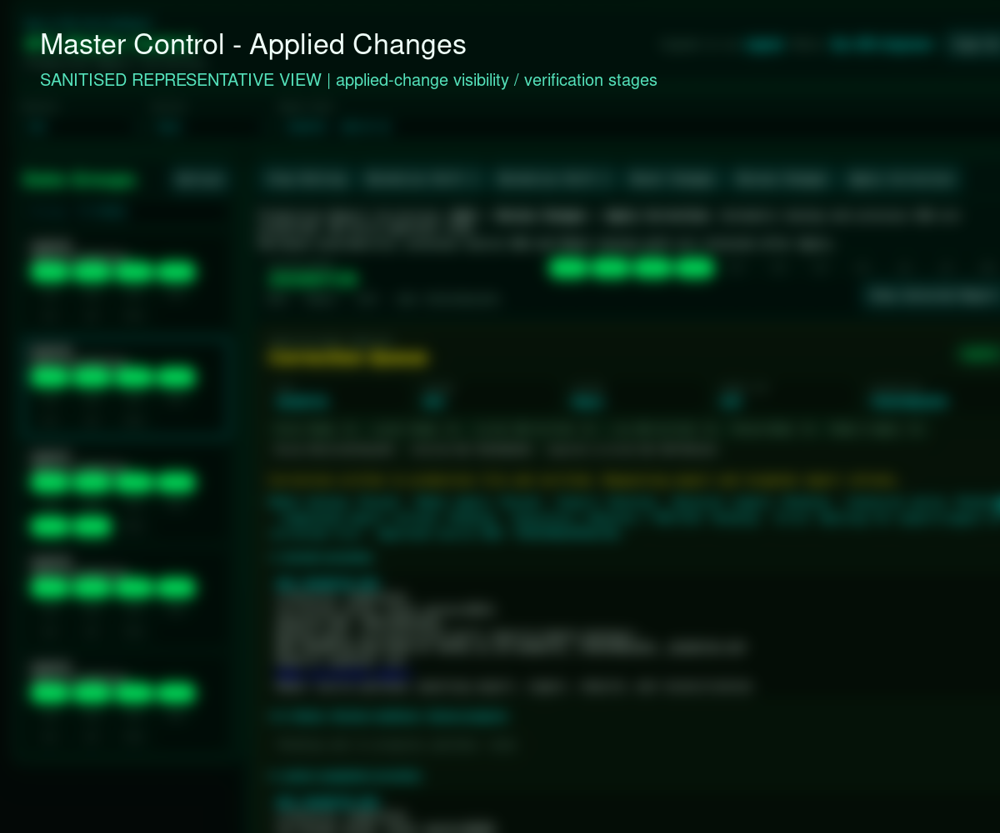

Industrial Systems Integration
A staged integration architecture for moving machine reports and events through local collection, validation, recovery-aware queueing, server-side ingestion and operational reporting.

PROJECT OVERVIEW
This project focuses on the boundary between industrial source material and a usable operational application. It is a public-safe description of the maintained integration patterns, not a publication of plant topology or private endpoint configuration.
The architecture treats collection, validation, queueing, ingestion and reporting as separate stages so that a failed or incomplete transfer can be reviewed rather than mistaken for a successful update.
THE PROBLEM
Machine reports and event files must cross a trust boundary before they become operational information. Directly copying files or accepting malformed input can create stale, duplicate or misleading views. The engineering problem is to preserve provenance and make transfer state visible while keeping the local collection path resilient.
HOW IT IS USED
A local collector observes the approved source area and hands selected report material to the integration path. The receiver validates the payload, places work into a recovery-aware queue when required, and ingests accepted data into the server-side reporting model. Operators then review the resulting status or report surface; rejected, delayed and pending states remain available for diagnosis.
PROJECT EVIDENCE
Sanitized screenshots from the working system show the review gate before an operational change and the applied state after verification. Internal names, values, hosts and identifiers are removed; the authored hero artwork is deliberately excluded from this gallery.


HOW IT WORKS
Source files and events are collected locally, normalized and validated, then moved through an explicit queue boundary before server-side ingestion. Accepted data feeds reporting and operations views; failures remain classified for review.
ENGINEERING HIGHLIGHTS
- Explicit stage boundaries make it possible to reason about collection, acceptance and presentation independently.
- Validation and queue state preserve a review path for malformed, delayed or incomplete transfers.
- Local-first collection reduces dependence on a continuously available upstream connection.
- Server-side ingestion feeds the same reporting model used by operational views instead of creating a second source of truth.
CURRENT CAPABILITIES
- Local report and event collection patterns.
- Input validation and controlled server-side ingestion.
- Recovery-aware queue and applied-change visibility.
- Operational reporting integration for accepted data.
- Public-safe architecture and representative interface evidence.
POTENTIAL / NEXT APPLICATIONS
Could be extended to support additional machine-source adapters, signed transfer manifests and richer freshness monitoring. Potential applications include multi-site ingestion gateways, controlled maintenance-file exchange and auditable migration pipelines. The architecture could be adapted for other industrial file-to-service integrations after an approved source contract and security review.
TECHNOLOGY
Verified project-specific stack: Python, Flask, REST API boundaries, SQL / SQLite operational storage, local file processing, validation and recovery-aware queueing.
LIMITATIONS / PRIVACY
This is a private industrial implementation. No private hosts, ports, credentials, employee information, machine identifiers, packet contents or proprietary source paths are published. Transfer architecture is documented at a level suitable for public review; deployment acceptance is not claimed here.
RELATED PROJECTS / LINKS
See how the integration path connects to production intelligence.
RELATED: BTC PRODUCTION INTELLIGENCE